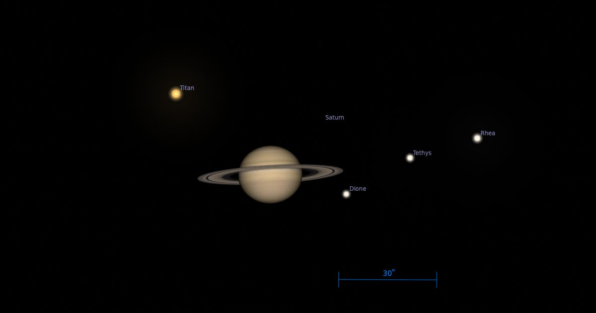

The Sky Today в среду, 7 октября: Титан проходит севернее Сатурна
Ищете мероприятие Sky на этой неделе?
Ознакомьтесь с нашей полной рубрикой «Небо на этой неделе».
6 октября: Луна закрывает самую яркую луну Юпитера, Сатурна, Титан, который сегодня вечером закрыл промежуток между собой и своей родительской планетой, чтобы сидеть менее чем на 1’ к северо-востоку от кольцевого мира.
С Сатурном уже над горизонтом, когда небо темнеет,Продолжить чтение "Небо сегодня в среду, 7 октября: Титан проходит к северу от Сатурна" The post The Sky Today on Wednesday, Octob